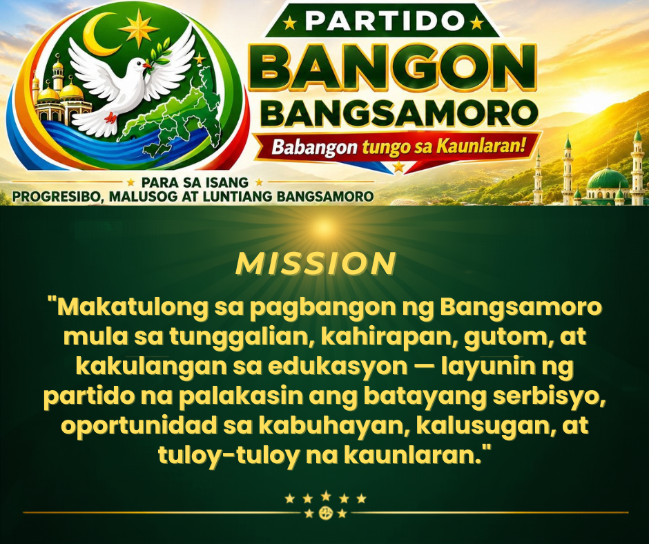

Ano ang misyon ng Partido Bangon Bangsamoro?
Ang misyon ng PBB ay itatag ang isang Bangsamoro na may malinis na pamahalaan, tapat na serbisyo, at tunay na kapayapaan — kung saan ang bawat pamilya ay may disenteng kabuhayan, ang bawat bata ay may access sa kalidad na edukasyon at kalusugan, at ang bawat Bangsamoro ay may pag-asa sa hinaharap.
Hindi lang kami nagpapahayag ng pangako — kami ay nagtatayo ng sistema na nagpapadala ng resulta sa bawat mesa.
Ano ang Partido Bangon Bangsamoro?
Ang PBB ay partido ng mga Bangsamoro — itinatag noong 2022 sa Cotabato City ng mga lider mula sa bawat sektor: mga guro, magsasaka, mangingisda, kabataan, at mga propesyonal. Iginagalang namin ang sakripisyo ng nakaraan, pero naniniwala kami na ang laban ngayon ay sa pamamagitan ng malinis na pamahalaan at tapat na serbisyo.
Ngayon, halos 71,000 na ang kasapi. Lalaban kami sa parliamentaryong halalan sa Setyembre 14, 2026 — hindi para sa kapangyarihan, kundi para sa mga tagapagmana ng kapayapaan.
Ano ang BANGON Plataporma?
Ang BANGON ay ang plataporma ng pamahalaan ng PBB para sa Bangsamoro — nakatayo ito sa anim na haligi:
- Batayang Serbisyo — ₱8,000 na tulong sa bawat pamilya, Super Health Stations na may libreng gamot at laboratoryo, libreng internet sa mga paaralan.
- Alyansa at Partnership — pakikipagtulungan sa lahat ng sektor, Bottom-Up Budgeting para sa bawat barangay.
- Kalikasan — pangangalaga sa lupa, ilog, at dagat na pinagkakakitaan natin.
- Green Economy — kabuhayan na hindi sumisira sa kalikasan, suporta sa mga magsasaka, mangingisda, at Halal na negosyo.
- Bukas na Pamahalaan — walang tinatago, walang EPAL, lahat ng budget ay malinaw.
- Kapayapaan — tunay na kapayapaan na may kasamang disenteng kabuhayan sa bawat mesa.
Paano ako makakasali?
Tatlong paraan para makasama ka sa amin:
- Maging miyembro — mag-fill up ng form at makakakuha ka ng PBB Membership ID.
- Maging Volunteer — tumulong sa mga gawain ng kampanya, kahit hindi ka miyembro. Hindi ka pipilitin, at malaya kang tumulong sa paraang gusto mo.
- Makipag-Partnership — kung kumakatawan ka sa isang organisasyon (mosque committee, youth group, farmers' cooperative, mothers' association, atbp.), puwede tayong magkasama sa layunin.
Libre ang lahat. Walang bayad, walang hidden charge.
Magkano ang bayad sa membership?
Libre po — walang bayad.
Libre ang membership, libre ang Membership ID. Hindi kami nanghihingi ng pera — lalo na sa mga pamilyang hirap sa araw-araw.
Kung may humingi sa inyo ng bayad kapalit ng membership o ID, huwag po kayong magbayad. Iulat agad sa 0966 301 8777. Protektahan natin ang isa't isa sa scam.
Ano ang pinagkaiba ng miyembro at Volunteer?
Miyembro — opisyal na kasapi ng partido. May Membership ID ka na may pangalan at litrato mo.
Volunteer — tumutulong sa mga gawain ng partido, miyembro man o hindi.
Hindi mo kailangang maging miyembro para tumulong. At hindi ka pipilitin na tumulong kahit miyembro ka na. Malaya ka — dahil sa PBB, ang pakikilahok ay base sa merito at kusang-loob, hindi sa obligasyon.
Nasaan ang inyong opisina at paano ko kayo matatawagan?
Narito kung paano mo kami makakausap — piliin ang pinakamadali sa iyo:
- 📍 Opisina: Cotabato City, BARMM (tumawag muna bago pumunta)
- 📞 Hotline: 0966 301 8777 — may taong sasagot, hindi robot
- 📧 Email: info@bangonbangsamoro.com
- 💬 Messenger: Mag-message sa Facebook page namin — sinasagot namin araw-araw
Para sa madalian — insidente, reklamo, o usaping pangkaligtasan — tumawag sa hotline; may taong sasagot, hindi awtomatikong mensahe. Lahat ng paraan ng pakikipag-ugnayan.
Kailan ang halalan at paano ako makakaboto?
Ang halalan ay sa Setyembre 14, 2026.
Para sa rehistrasyon, presinto, at kung sino ang puwedeng bumoto — ang COMELEC ang may-awtoridad dito, hindi kami bilang partido.
Pero huwag mag-alala — may gabay sa pagboto kaming inihanda para malinaw ang lahat at hindi ka maligaw. Para sa mga nasa "Red" o "Orange" na lugar, mag-ingat po tayo at samahan natin ang bawat isa sa presinto.
Puwede ba akong mag-donate o sumuporta sa kampanya?
Salamat sa iyong pag-iisip na tumulong — malaking bagay ito para sa amin, lalo na sa mga negosyanteng gustong mamuhunan sa kinabukasan ng Bangsamoro.
Kung gusto mong mag-donate — pera, gamit, o oras — piliin ang "Mag-donate ng resources" sa volunteer form, o mag-email sa info@bangonbangsamoro.com at gagabayan namin kayo.
Lahat ng kontribusyon ay iniuulat sa COMELEC. Walang tinatago, walang bulsa na hindi nakikita — dahil ang tiwala ng tao ay ang pinakamahalaga naming yaman.
Kaugnay ba ang PBB ng MILF o MNLF?
Hindi. Ang PBB ay malaya at hiwalay sa dalawang kilusan.
Iginagalang namin ang kanilang sakripisyo at ang mahabang proseso ng kapayapaan — dahil dito nagmula ang karapatan nating mabuhay nang payapa. Pero ang PBB ay sariling partido — itinatag ng mga ordinaryong Bangsamoro na gustong makita ang resulta ng kapayapaan sa bawat mesa ng pamilya.
Ang kapayapaan ay hindi lang pagtigil ng putukan — ito ay disenteng kabuhayan para sa bawat pamilya.
Ano ang PBB Membership ID? Government ID ba ito?
Ang PBB Membership ID ay patunay na kasapi ka ng partido — may litrato, lagda, at QR code na puwedeng i-verify.
⚠️ Hindi ito government-issued ID. Hindi ito kapalit ng voter's ID o national ID. ID lang ito ng partido.
Puwedeng i-verify ang alinmang PBB ID sa verification page — para siguradong totoo.
Ano ang gagawin ninyo sa aking personal na impormasyon?
Pribado ang impormasyon mo.
Hindi namin ibinebenta, hindi ipinapasa sa iba, at hindi inilalathala ang pangalan mo o detalye mo. Ginagamit lang namin ito para sa coordination — halimbawa, para maipadala sa iyo ang mga balita ng partido o imbitasyon sa mga kumustahan.
Kung gusto mong tumigil na sa pagtanggap ng mensahe, i-text lang ang STOP anumang oras.
Basahin ang buong Privacy Policy — dahil karapatan mong malaman kung paano namin ginagamit ang impormasyon mo.
Wala akong internet. Paano pa rin ako makakasali?
Kahit walang internet, puwede ka pa ring sumali.
📱 I-text ang SUMALI sa 0966 301 8777 — kami na ang bahala sa form mo.
🏘️ O pumunta sa chapter ng PBB sa probinsya o barangay mo — may tao diyan na tutulong sa iyo, walang iwanan.
Mag-message sa amin
Wala rito ang tanong ninyo? Mag-message sa amin at sasagutin ito ng tunay na tao.
Karaniwang sumasagot kami sa loob ng ilang oras. Para sa madalian — insidente, reklamo, o usaping pangkaligtasan — tumawag sa 0966 301 8777; may taong sasagot, hindi awtomatikong mensahe.